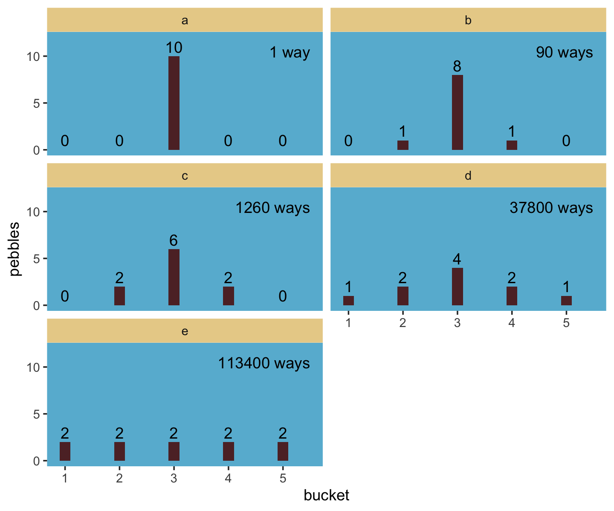
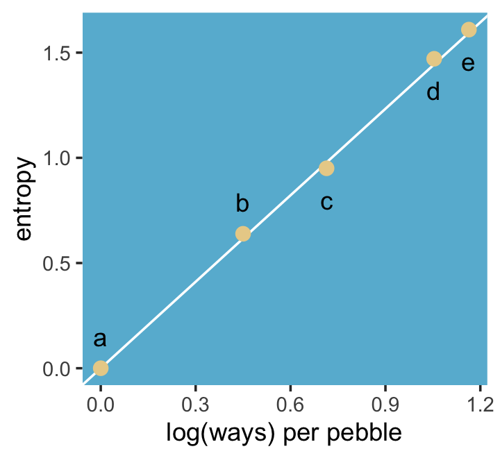
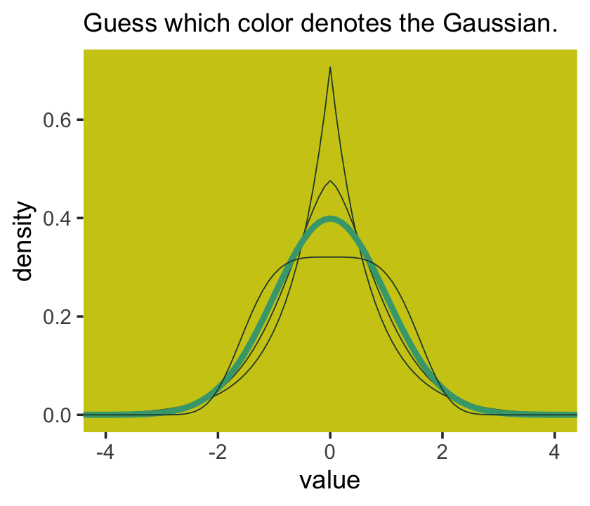
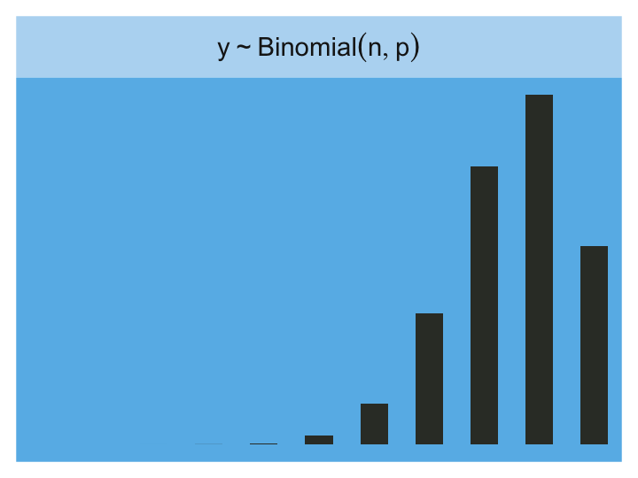

Statistical models force many choices upon us. Some of these choices are distributions that represent uncertainty. We must choose, for each parameter, a prior distribution. And we must choose a likelihood function, which serves as a distribution of data. There are conventional choices, such as wide Gaussian priors and the Gaussian likelihood of linear regression. These conventional choices work unreasonably well in many circumstances. But very often the conventional choices are not the best choices. Inference can be more powerful when we use all of the information, and doing so usually requires going beyond convention.
To go beyond convention, it helps to have some principles to guide choice. When an engineer wants to make an unconventional bridge, engineering principles help guide choice. When a researcher wants to build an unconventional model, entropy provides one useful principle to guide choice of probability distributions: Bet on the distribution with the biggest entropy. (McElreath, 2020, p. 299)
10.0.0.1 Rethinking: Bayesian updating is entropy maximization
Another kind of probability distribution, the posterior distribution deduced by Bayesian updating, is also a case of maximizing entropy. The posterior distribution has the greatest entropy relative to the prior (the smallest cross entropy) among all distributions consistent with the assumed constraints and the observed data. (p. 300)
10.1 Maximum entropy
In Chapter 7, you met the basics of information theory. In brief, we seek a measure of uncertainty that satisfies three criteria: (1) the measure should be continuous; (2) it should increase as the number of possible events increases; and (3) it should be additive. The resulting unique measure of the uncertainty of a probability distribution \(p\) with probabilities \(p_i\) for each possible event \(i\) turns out to be just the average log-probability:
\[H(p) = - \sum_i p_i \log p_i\]
This function is known as information entropy.
The principle of maximum entropy applies this measure of uncertainty to the problem of choosing among probability distributions. Perhaps the simplest way to state the maximum entropy principle is:
The distribution that can happen the most ways is also the distribution with the biggest information entropy. The distribution with the biggest entropy is the most conservative distribution that obeys its constraints.
There’s nothing intuitive about this idea, so if it seems weird, you are normal. (pp. 300–301, emphasis in the original)
Let’s execute the code for the pebbles-in-buckets example.
library(tidyverse)d <-tibble(a =c(0, 0, 10, 0, 0),b =c(0, 1, 8, 1, 0),c =c(0, 2, 6, 2, 0),d =c(1, 2, 4, 2, 1),e =2)# This is our analogue to McElreath's `lapply()` coded |>mutate(across(.cols =everything(), .fns = \(x) x /sum(x))) |># The next few lines constitute our analogue to his `sapply()` codepivot_longer(everything(), names_to ="plot") |>group_by(plot) |>summarise(h =-sum(ifelse(value ==0, 0, value *log(value))))
# A tibble: 5 × 2
plot h
<chr> <dbl>
1 a 0
2 b 0.639
3 c 0.950
4 d 1.47
5 e 1.61
For more on the formula syntax we used within mutate(across()), you might check out this.
Anyway, we’re almost ready to plot, which brings us to color. For the plots in this chapter, we’ll be taking our color palettes from the ghibli package(Henderson, 2022), which provides palettes based on scenes from anime films by the Studio Ghibli.
library(ghibli)
The main function is ghibli_palette() which you can use to both preview the palettes before using them and also index in order to use specific colors. For example, we’ll play with “MarnieMedium1”, first.
We might plot our version of the final panel like so.
d |># The next four lines are the same from abovemutate(across(.cols =everything(), .fns = \(x) x /sum(x))) |>pivot_longer(everything()) |>group_by(name) |>summarise(h =-sum(ifelse(value ==0, 0, value *log(value)))) |># Here's the R code 9.4 stuffmutate(n_ways =c(1, 90, 1260, 37800, 113400)) |>group_by(name) |>mutate(log_ways =log(n_ways) /10,text_y =ifelse(name <"c", h + .15, h - .15)) |># Plotggplot(aes(x = log_ways, y = h)) +geom_abline(intercept =0, slope =1.37, color ="white") +geom_point(size =2.5, color =ghibli_palette("MarnieMedium1")[7]) +geom_text(aes(y = text_y, label = name)) +labs(x ="log(ways) per pebble",y ="entropy") +theme(panel.background =element_rect(fill =ghibli_palette("MarnieMedium1")[6]),panel.grid =element_blank())

“The distribution that can happen the greatest number of ways is the most plausible distribution. Call this distribution the maximum entropy distribution” (p. 303, emphasis in the original). Among the pebbles, the maximum entropy distribution was e (i.e., the uniform).
10.1.0.1 Rethinking: What good is intuition?
“Like many aspects of information theory, maximum entropy is not very intuitive. But note that intuition is just a guide to developing methods. When a method works, it hardly matters whether our intuition agrees” (p. 303).
10.1.1 Gaussian
Behold the probability density for the generalized normal distribution:
where \(\alpha =\) the scale, \(\beta =\) the shape, \(\mu =\) the location, and \(\Gamma =\) the gamma function. If you read closely in the text, you’ll discover that the densities in the right panel of Figure 10.2 were all created with the constraint \(\sigma^2 = 1\). But \(\sigma^2 \neq \alpha\) and there’s no \(\sigma\) in the equations in the text. However, it appears the variance for the generalized normal distribution follows the form
I got the formula from Wikipedia.com. Don’t judge. We can wrap that formula in a custom function, alpha_per_beta(), use it to solve for the desired \(\beta\) values, and plot. But one more thing: McElreath didn’t tell us exactly which \(\beta\) values the left panel of Figure 10.2 was based on. So the plot below is my best guess.
alpha_per_beta <-function(beta, variance =1) {sqrt((variance *gamma(1/ beta)) /gamma(3/ beta))}crossing(value =seq(from =-5, to =5, by =0.1),# I arrived at these values by trial and errorbeta =c(1, 1.5, 2, 4)) |>mutate(mu =0,alpha =alpha_per_beta(beta)) |># Behold the formula for the generalized normal distribution in code!mutate(density = (beta / (2* alpha *gamma(1/ beta))) *exp(1) ^ (-1* (abs(value - mu) / alpha) ^ beta)) |># Plotggplot(aes(x = value, y = density, group = beta)) +geom_line(aes(color = beta ==2, linewidth = beta ==2)) +scale_color_manual(values =c(ghibli_palette("MarnieMedium2")[c(2, 4)])) +scale_linewidth_manual(values =c(1/4, 1.25)) +labs(subtitle ="Guess which color denotes the Gaussian.") +coord_cartesian(xlim =c(-4, 4)) +theme(legend.position ="none",panel.background =element_rect(fill =ghibli_palette("MarnieMedium2")[7]),panel.grid =element_blank())

Once you have \(\alpha\) and \(\beta\), the entropy equation for the generalized normal distribution is
Here’s how we can use that equation to make our version of right panel of Figure 10.2.
tibble(beta =seq(from =1, to =4, length.out =100)) |>mutate(alpha =alpha_per_beta(beta)) |>mutate(entropy = (1/ beta) -log((beta) / (2* alpha *gamma(1/ beta)))) |>ggplot(aes(x = beta, y = entropy)) +geom_vline(xintercept =2, color ="white") +geom_line(linewidth =2, color =ghibli_palette("MarnieMedium2")[6]) +xlab(expression(beta~(i.e.*", "*shape))) +theme(panel.background =element_rect(fill =ghibli_palette("MarnieMedium2")[7]),panel.grid =element_blank())

I should note the solution to this plot was initially beyond me. However, fellow enthusiast Hamed Bastan-Hagh generously shared the correct solution on GitHub.
But getting back on track:
The take-home lesson from all of this is that, if all we are willing to assume about a collection of measurements is that they have a finite variance, then the Gaussian distribution represents the most conservative probability distribution to assign to those measurements. But very often we are comfortable assuming something more. And in those cases, provided our assumptions are good ones, the principle of maximum entropy leads to distributions other than the Gaussian. (p. 306)
10.1.2 Binomial
The binomial likelihood entails
counting the numbers of ways that a given observation could arise, according to our assumptions. The resulting distribution is known as the binomial distribution. If only two things can happen (blue or white marble, for example), and there’s a constant chance \(p\) of each across \(n\) trials, then the probability of observing \(y\) events of type 1 and \(n - y\) events of type 2 is:
It may help to note that the fraction with the factorials is just saying how many different ordered sequences of \(n\) outcomes have a count of \(y\). (p. 307, emphasis in the original)
For me, that last sentence made more sense when I walked it out in an example. To do so, let’s wrap that fraction of factorials into a function.
count_ways <-function(n, y) {# `n` is the total number of trials (i.e., the number of rows in your vector)# `y` is the total number of 1s (i.e., successes) in your vector (factorial(n) / (factorial(y) *factorial(n - y)))}
Now consider three sequences:
0, 0, 0, 0 (i.e., \(n = 4\) and \(y = 0\))
1, 0, 0, 0 (i.e., \(n = 4\) and \(y = 1\))
1, 1, 0, 0 (i.e., \(n = 4\) and \(y = 2\))
We can organize that information in a little tibble and then demo our count_ways() function.
tibble(sequence =1:3,n =4,y =c(0, 1, 2)) |>mutate(n_ways =count_ways(n = n, y = y))
# A tibble: 3 × 4
sequence n y n_ways
<int> <dbl> <dbl> <dbl>
1 1 4 0 1
2 2 4 1 4
3 3 4 2 6
Here’s the pre-Figure 10.3 data McElreath presented on page 308.
Those data take just a tiny bit of wrangling before they’re ready to plot in our version of Figure 10.3.
d <- d |>pivot_longer(-distribution,names_to ="sequence", values_to ="probability") |>mutate(sequence =factor(sequence, levels =c("ww", "bw", "wb", "bb")))d |>ggplot(aes(x = sequence, y = probability, group =1)) +geom_point(size =2, color =ghibli_palette("PonyoMedium")[4]) +geom_line(color =ghibli_palette("PonyoMedium")[5]) +labs(x =NULL, y =NULL) +coord_cartesian(ylim =0:1) +facet_wrap(~ distribution) +theme(axis.ticks.x =element_blank(),panel.background =element_rect(fill =ghibli_palette("PonyoMedium")[2]),panel.grid =element_blank(),strip.background =element_rect(fill =ghibli_palette("PonyoMedium")[6]))
If we go step by step, we might count the expected value for each distribution like follows.
d |># `str_count()` will count the number of times "b" occurs # within a given row of `sequence`mutate(n_b =str_count(sequence, "b")) |>mutate(product = probability * n_b) |>group_by(distribution) |>summarise(expected_value =sum(product))
# A tibble: 4 × 2
distribution expected_value
<chr> <dbl>
1 a 1
2 b 1
3 c 1
4 d 1
We can use the same group_by() strategy on the way to computing the entropy values.
d |>group_by(distribution) |>summarise(entropy =-sum(probability *log(probability)))
# A tibble: 4 × 2
distribution entropy
<chr> <dbl>
1 a 1.39
2 b 1.33
3 c 1.33
4 d 1.21
Like in the text, distribution == "a" had the largest entropy of the four. In the next example, the \(\text{expected value} = 1.4\) and \(p = 0.7\).
p <-0.7a <-c((1- p)^2, p * (1- p), (1- p) * p, p^2)a
[1] 0.09 0.21 0.21 0.49
Here’s the entropy for our distribution a.
-sum(a *log(a))
[1] 1.221729
I’m going to alter McElreath’s simulation function from R code 10.9 to take a seed argument. In addition, I altered the names of the objects within the function and changed the output to a tibble that will also include the conditions “ww”, “bw”, “wb”, and “bb”.
sim_p <-function(seed, g =1.4) {set.seed(seed) x_123 <-runif(3) x_4 <- ((g) *sum(x_123) - x_123[2] - x_123[3]) / (2- g) z <-sum(c(x_123, x_4)) p <-c(x_123, x_4) / ztibble(h =-sum(p *log(p)), p = p,key =factor(c("ww", "bw", "wb", "bb"), levels =c("ww", "bw", "wb", "bb")))}
For a given seed and g value, our augmented sim_p() function returns a \(4 \times 3\) tibble.
sim_p(seed =9.9, g =1.4)
# A tibble: 4 × 3
h p key
<dbl> <dbl> <fct>
1 1.02 0.197 ww
2 1.02 0.0216 bw
3 1.02 0.184 wb
4 1.02 0.597 bb
So the next step is to determine how many replications we’d like, create a tibble with seed values ranging from 1 to that number, and then feed those seed values into sim_p() via purrr::map2(), which will return a nested tibble. We’ll then unnest() and take a peek.
# How many replications would you like?n_rep <-1e5d <-tibble(seed =1:n_rep) |>mutate(sim =map2(.x = seed, .y =1.4, .f = sim_p)) |>unnest(sim)
And we’ll also want a subset of the data to correspond to McElreath’s “A” through “D” distributions.
subset_d <- ranked_d |># I arrived at these `rank` values by trial and errorfilter(rank %in%c(1, 87373, n_rep -1500, n_rep -10)) |># I arrived at the `height` values by trial and error, toomutate(height =rep(c(8, 2.25, 0.75, 0.5), each =4),distribution =rep(letters[1:4], each =4))head(subset_d)
# A tibble: 6 × 7
seed h p key rank height distribution
<int> <dbl> <dbl> <fct> <int> <dbl> <chr>
1 55665 1.22 0.0903 ww 1 8 a
2 55665 1.22 0.209 bw 1 8 a
3 55665 1.22 0.210 wb 1 8 a
4 55665 1.22 0.490 bb 1 8 a
5 50981 1.000 0.0459 ww 87373 2.25 b
6 50981 1.000 0.0459 bw 87373 2.25 b
We’re finally ready to make our version of the left panel of Figure 10.4.
p1 <- d |>ggplot(aes(x = h)) +geom_density(linewidth =0, fill =ghibli_palette("LaputaMedium")[3],adjust =1/4) +# Note the data statements for the next two geomsgeom_linerange(data = subset_d |>group_by(seed) |>slice(1),aes(ymin =0, ymax = height),color =ghibli_palette("LaputaMedium")[5]) +geom_text(data = subset_d |>group_by(seed) |>slice(1),aes(y = height +0.5, label = distribution)) +scale_x_continuous("Entropy", breaks =seq(from =0.7, to =1.2, by =0.1)) +theme(panel.background =element_rect(fill =ghibli_palette("LaputaMedium")[7]),panel.grid =element_blank())
Did you notice how our adjust = 1/4 with geom_density() served a similar function to the adj=0.1 in McElreath’s dens() code? Anyways, here we make the right panel and combine the two with patchwork.
Because we simulated, our values won’t match up identically with those in the text. We got pretty close, eh?
Since we saved our sim_p() output in a nested tibble, which we then unnested(), there’s no need to separate the entropy values from the distributional values the way McElreath did in his R code 10.11. If we wanted to determine our highest entropy value–and the corresponding seed and p values, while we’re at it–, we might execute something like this.
That maximum h value matched up nicely with the one in the text. If you look at the p column, you’ll see our values approximated McElreath’s distribution values, too. In both cases, they’re real close to the a values we computed, above.
a
[1] 0.09 0.21 0.21 0.49
“All four of these distributions really do have expected value 1.4. But among the infinite distributions that satisfy this constraint, it is only the most even distribution, the exact one nominated by the binomial distribution, that has greatest entropy” (p. 310).
10.2 Generalized linear models
For an outcome variable that is continuous and far from any theoretical maximum or minimum, [a simple] Gaussian model has maximum entropy. But when the outcome variable is either discrete or bounded, a Gaussian likelihood is not the most powerful choice. (p. 312)
I winged the values for our Figure 10.5.
tibble(x =seq(from =-1, to =3, by =0.01)) |>mutate(probability =0.35+ x *0.5) |>ggplot(aes(x = x, y = probability)) +geom_rect(xmin =-1, xmax =3,ymin =0, ymax =1,fill =ghibli_palette("MononokeMedium")[5]) +geom_hline(yintercept =0:1, linetype =2, color =ghibli_palette("MononokeMedium")[7]) +geom_line(aes(linetype = probability >1, color = probability >1),linewidth =1) +geom_segment(x =1.3, xend =3,y =1, yend =1,linewidth =2/3, color =ghibli_palette("MononokeMedium")[3]) +annotate(geom ="text",x =1.28, y =1.04, hjust =1,label ="This is why we need link functions",color =ghibli_palette("MononokeMedium")[4], size =2.6) +scale_y_continuous(breaks =c(0, 0.5, 1)) +scale_color_manual(values =c(ghibli_palette("MononokeMedium")[3:4])) +coord_cartesian(xlim =c(0, 2),ylim =c(0, 1.2)) +theme(legend.position ="none",panel.background =element_rect(fill =ghibli_palette("MononokeMedium")[1]),panel.grid =element_blank())
Luckily, it’s easy to do better. By using all of our prior knowledge about the outcome variable, usually in the form of constraints on the possible values it can take, we can appeal to maximum entropy for the choice of distribution. Then all we have to do is generalize the linear regression strategy–replace a parameter describing the shape of the likelihood with a linear model–to probability distributions other than the Gaussian. (p. 313)
As we will see, doing better will often involve using link functions.
10.2.0.1 Rethinking: The scourge of Histomancy
One strategy for choosing an outcome distribution is to plot the histogram of the outcome variable and, by gazing into its soul, decide what sort of distribution function to use. Call this strategy Histomancy, the ancient art of divining likelihood functions from empirical histograms. This sorcery is used, for example, when testing for normality before deciding whether or not to use a non-parametric procedure. Histomancy is a false god. (p. 314, emphasis in the original)
Stop worshiping at alter of this false god. Use domain knowledge and principles maximum entropy to pick your likelihoods.
10.2.1 Meet the family
The most common distributions used in statistical modeling are members of a family known as the exponential family. Every member of this family is a maximum entropy distribution, for some set of constraints. And conveniently, just about every other statistical modeling tradition employs the exact same distributions, even though they arrive at them via justifications other than maximum entropy. (p. 314, emphasis in the original)
Here are the Gamma and Exponential panels for Figure 10.6.
In traditional statistics, likelihood functions are “objective” and prior distributions “subjective.” In Bayesian statistics, likelihoods are deeply related to prior probability distributions: They are priors for the data, conditional on the parameters. And just like with other priors, there is no correct likelihood. But there are better and worse likelihoods, depending upon the context. (p. 316)
To build a regression model from any of the exponential family distributions is just a matter of attaching one or more linear models to one or more of the parameters that describe the distribution’s shape. But as hinted at earlier, usually we require a link function to prevent mathematical accidents like negative distances or probability masses that exceed 1. (p. 316, emphasis in the original)
where \(\theta_i\) is a parameter of central interest (e.g., the probability of 1 in a Binomial distribution) and \(\phi\) is a placeholder for any other parameters necessary for the likelihood but not typically of primary substantive interest (e.g., \(\sigma\) in conventional Gaussian models). The \(f(\cdot)\) portion is the link function.
Speaking about links,
the logit link maps a parameter that is defined as a probability mass, and therefore constrained to lie between zero and one, onto a linear model that can take on any real value. This link is extremely common when working with binomial GLMs. In the context of a model definition, it looks like this:
As we’ll see later, we will make great use of this formula via the plogis() function when making sense of logistic regression models. Now we have that last formula in hand, we can make the data necessary for Figure 10.7.
# First, we'll make data for the horizontal linesalpha <-0beta <-4lines <-tibble(x =seq(from =-1, to =1, by =0.25)) |>mutate(`log-odds`= alpha + x * beta,probability =exp(alpha + x * beta) / (1+exp(alpha + x * beta)))# Now we're ready to make the primary databeta <-2d <-tibble(x =seq(from =-1.5, to =1.5, length.out =50)) |>mutate(`log-odds`= alpha + x * beta,probability =exp(alpha + x * beta) / (1+exp(alpha + x * beta))) # Now we make the individual plotsp1 <- d |>ggplot(aes(x = x, y =`log-odds`)) +geom_hline(data = lines,aes(yintercept =`log-odds`),color =ghibli_palette("YesterdayMedium")[6]) +geom_line(color =ghibli_palette("YesterdayMedium")[3], linewidth =1.5) +coord_cartesian(xlim =c(-1, 1)) +theme(panel.background =element_rect(fill =ghibli_palette("YesterdayMedium")[5]),panel.grid =element_blank())p2 <- d |>ggplot(aes(x = x, y = probability)) +geom_hline(data = lines,aes(yintercept = probability),color =ghibli_palette("YesterdayMedium")[6]) +geom_line(color =ghibli_palette("YesterdayMedium")[3], linewidth =1.5) +coord_cartesian(xlim =c(-1, 1)) +theme(panel.background =element_rect(fill =ghibli_palette("YesterdayMedium")[7]),panel.grid =element_blank())# Finally, we're ready to mash the plots together and behold their nerdy glory(p1 | p2) +plot_annotation(subtitle ="The logit link transforms a linear model (left) into a probability (right).")

The key lesson for now is just that no regression coefficient, such as \(\beta\), from a GLM ever produces a constant change on the outcome scale. Recall that we defined interaction (Chapter 8) as a situation in which the effect of a predictor depends upon the value of another predictor. Well now every predictor essentially interacts with itself, because the impact of a change in a predictor depends upon the value of the predictor before the change….
The second very common link function is the log link. This link function maps a parameter that is defined over only positive real values onto a linear model. For example, suppose we want to model the standard deviation \(\sigma\) of a Gaussian distribution so it is a function of a predictor variable \(x\). The parameter \(\sigma\) must be positive, because a standard deviation cannot be negative nor can it be zero. The model might look like:
In this model, the mean \(\mu\) is constant, but the standard deviation scales with the value \(x_i\). (p. 318, emphasis in the original)
This kind of model is trivial in the brms framework, which you can learn more about in Bürkner’s (2022) vignette, Estimating distributional models with brms. Before moving on with the text, let’s detour and see how we might fit such a model. First, we’ll simulate some continuous data y for which the \(\textit{SD}\) is affected by a dummy variable x.
set.seed(10)d <-tibble(x =rep(0:1, each =100)) |>mutate(y =rnorm(n =n(), mean =100, sd =10+ x *10))d
These data are based on IQ data. In psychology, general intelligence is often operationalized by and measured with standardized intelligence tests. The results from these tests are often summarized with an a single intelligence quotient (IQ) score, often called the full-scale IQ score. For many years now, the convention within among IQ test developers is to scale full-scale IQ scores so they have a population mean of 100 and a standard deviation of 15. One of the old and continuing controversies in the literature is whether men and women differ not in their means–they don’t–but in their standard deviations (e.g., Johnson et al., 2008). To give a sense of how one might explore such a controversy, we simulated data where the y variables have a mean of 100 and standard deviations of either 10 or 20, depending on one’s status on x. We can view what data like these look like with aid from tidybayes::stat_halfeye().
library(tidybayes)d |>mutate(x = x |>as.character()) |>ggplot(aes(x = y, y = x, fill = x)) +stat_halfeye(point_interval = mean_qi, .width =0.68,color =ghibli_palette("KikiMedium")[2]) +scale_fill_manual(values =c(ghibli_palette("KikiMedium")[c(4, 6)])) +coord_cartesian(ylim =c(1.5, 2)) +theme(axis.ticks.y =element_blank(),legend.position ="none",panel.background =element_rect(fill =ghibli_palette("KikiMedium")[7]),panel.grid =element_blank())
Even though the means of y are the same for both levels of the x dummy, the variance for x == 1 is substantially larger than that for x == 0. Let’s open brms.
library(brms)
For such a model, we have two formulas: one for \(\mu\) and one for \(\sigma\). We wrap both within the bf() function.
b10.1<-brm(data = d,family = gaussian,bf(y ~1, sigma ~1+ x),prior =c(prior(normal(100, 5), class = Intercept),prior(normal(2.70805, 0.5), class = Intercept, dpar = sigma),prior(normal(0, 0.5), class = b, dpar = sigma)),seed =10,file ="fits/b10.01")
Do note our use of the dpar arguments in the prior() functions Here’s the summary.
print(b10.1)
Family: gaussian
Links: mu = identity; sigma = log
Formula: y ~ 1
sigma ~ 1 + x
Data: d (Number of observations: 200)
Draws: 4 chains, each with iter = 2000; warmup = 1000; thin = 1;
total post-warmup draws = 4000
Regression Coefficients:
Estimate Est.Error l-95% CI u-95% CI Rhat Bulk_ESS Tail_ESS
Intercept 98.55 0.84 96.83 100.17 1.00 4288 2582
sigma_Intercept 2.26 0.07 2.13 2.40 1.00 3856 2991
sigma_x 0.69 0.10 0.50 0.88 1.00 4140 2963
Draws were sampled using sampling(NUTS). For each parameter, Bulk_ESS
and Tail_ESS are effective sample size measures, and Rhat is the potential
scale reduction factor on split chains (at convergence, Rhat = 1).
Now we get an intercept for both \(\mu\) and \(\sigma\), with the intercept for sigma labeled as sigma_Intercept. And note the \(\beta\) coefficient for \(\sigma\) was named sigma_x. Also notice the scale the sigma_i coefficients are on. These are not in the original metric, but rather based on a logarithmic transformation of \(\sigma\). You can confirm that by the second line of the print() output: Links: mu = identity; sigma = log. So if you want to get a sense of the effects of x on the \(\sigma\) for y, you have to exponentiate the formula. Here we’ll do so with the output from as_draws_df().
With the samples in hand, we’ll use the model formula to compute the model-implied standard deviations of y based on the x dummy and then examine them in a plot.
post |>mutate(`x == 0`=exp(b_sigma_Intercept + b_sigma_x *0),`x == 1`=exp(b_sigma_Intercept + b_sigma_x *1)) |>pivot_longer(contains("==")) |>ggplot(aes(x = value, y = name, fill = name)) +stat_halfeye(point_interval = median_qi, .width =0.95,color =ghibli_palette("KikiMedium")[2]) +scale_fill_manual(values =c(ghibli_palette("KikiMedium")[c(4, 6)])) +labs(x =expression(sigma[x]), y =NULL,subtitle ="Model-implied standard deviations by group") +coord_cartesian(ylim =c(1.5, 2)) +theme(axis.ticks.y =element_blank(),legend.position ="none",panel.background =element_rect(fill =ghibli_palette("KikiMedium")[7]),panel.grid =element_blank())
If we looked back at the data, those \(\textit{SD}\) estimates are right about what we’d expect.
d |>group_by(x) |>summarise(sd =sd(y) |>round(digits =1))
# A tibble: 2 × 2
x sd
<int> <dbl>
1 0 9.4
2 1 19.4
What the log link effectively assumes is that the parameter’s value is the exponentiation of the linear model. Solving \(\log (\sigma_i) = \alpha + \beta x_i\) for \(\sigma_i\) yields the inverse link:
\[\sigma_i = \exp (\alpha + \beta x_i)\]
The impact of this assumption can be seen in [our version of] Figure 10.8. (pp. 318–319)
# First, we'll make data that'll be make the horizontal linesalpha <-0beta <-2lines <-tibble(`log-measurement`=-3:3,`original measurement`=exp(-3:3))# Now we're ready to make the primary datad <-tibble(x =seq(from =-1.5, to =1.5, length.out =50)) |>mutate(`log-measurement`= alpha + x * beta,`original measurement`=exp(alpha + x * beta))# Now we make the individual plotsp1 <- d |>ggplot(aes(x = x, y =`log-measurement`)) +geom_hline(data = lines,aes(yintercept =`log-measurement`),color =ghibli_palette("YesterdayMedium")[6]) +geom_line(color =ghibli_palette("YesterdayMedium")[3], linewidth =1.5) +coord_cartesian(xlim =c(-1, 1)) +theme(panel.background =element_rect(fill =ghibli_palette("YesterdayMedium")[5]),panel.grid =element_blank())p2 <- d |>ggplot(aes(x = x, y =`original measurement`)) +geom_hline(data = lines,aes(yintercept =`original measurement`),color =ghibli_palette("YesterdayMedium")[6]) +geom_line(color =ghibli_palette("YesterdayMedium")[3], linewidth =1.5) +scale_y_continuous(position ="right", limits =c(0, 10)) +coord_cartesian(xlim =c(-1, 1)) +theme(panel.background =element_rect(fill =ghibli_palette("YesterdayMedium")[7]),panel.grid =element_blank())# Combine the ggplotsp1 | p2
Using a log link for a linear model (left) implies an exponential scaling of the outcome with the predictor variable (right). Another way to think of this relationship is to remember that logarithms are magnitudes. An increase of one unit on the log scale means an increase of an order of magnitude on the untransformed scale. And this fact is reflected in the widening intervals between the horizontal lines in the right-hand plot of Figure 10.8. (p. 319, emphasis in the original)
10.2.2.1 Rethinking: When in doubt, play with assumptions
Link functions are assumptions. And like all assumptions, they are useful in different contexts. The conventional logit and log links are widely useful, but they can sometimes distort inference. If you ever have doubts, and want to reassure yourself that your conclusions are not sensitive to choice of link function, then you can use sensitivity analysis. A sensitivity analysis explores how changes in assumptions influence inference. (p. 319, emphasis in the original)
As an example, a common alternative to the logit link is the probit. Both are available with brms.
10.2.3 Omitted variable bias again
Back in Chapter 5 and Chapter 6, you saw some examples of omitted variable bias, where leaving a causally important variable out of a model leads to biased inference. The same thing can of course happen in GLMs. But it can be worse in GLMs, because even a variable that isn’t technically a confounder can bias inference, once we have a link function. The reason is that the ceiling and floor effects described above can distort estimates by suppressing the causal influence of a variable. (p. 320)
10.2.4 Absolute and relative differences
Within the context of GLMs with non-identity link functions,
parameter estimates do not by themselves tell you the importance of a predictor on the outcome. The reason is that each parameter represents a relative difference on the scale of the linear model, ignoring other parameters, while we are really interested in absolute differences in outcomes that must incorporate all parameters. (p. 320, emphasis in the original)
This will make more sense after we start playing around with logistic regression, count regression, and so on. For now, just file it away.
Johnson, W., Carothers, A., & Deary, I. J. (2008). Sex differences in variability in general intelligence: A new look at the old question. Perspectives on Psychological Science, 3(6), 518–531. https://doi.org/10.1111/j.1745-6924.2008.00096.x
Subramanian, S. V., Kim, R., & Christakis, N. A. (2018). The “average” treatment effect: A construct ripe for retirement. A commentary on Deaton and Cartwright. Social Science & Medicine, 210, 77–82. https://doi.org/10.1016/j.socscimed.2018.04.027
Williams, D. R., Martin, S. R., Liu, S., & Rast, P. (2020). Bayesian multivariate mixed-effects location scale modeling of longitudinal relations among affective traits, states, and physical activity. European Journal of Psychological Assessment, 36(6), 981–997. https://doi.org/10.1027/1015-5759/a000624